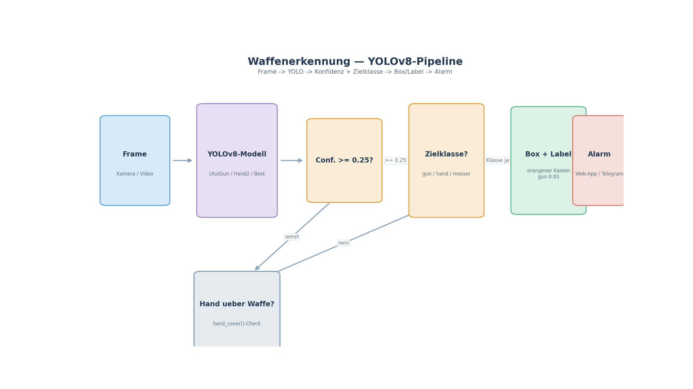

UtutCam — Waffenerkennung (Gun / Hand / Messer)¶
1. Überblick¶
Die Waffenerkennung erkennt Schusswaffen (gun), Hände (hand) und Messer live im Video — mithilfe eines YOLOv8-Neuronalen Netzes, das auf Google Colab mit eigenen Daten trainiert wurde. Pro erkanntem Objekt liefert die Erkennung eine Bounding-Box, eine Konfidenz und die Klasse. Ein Hand-Detection-Filter prüft, ob eine bloße Hand die Waffe abdeckt — so entstehen keine Fehlalarme, wenn jemand die Waffe nur anfasst.
Kamera/Video ──► YOLOv8 (UtutGun/UtutBest) ──► Box + Konfidenz
│
▼
Hand über Waffe? (hand_cover ≥ 0.70) ── ja ──► verwerfen (kein Fehlalarm)
│ nein
▼
orangener Kasten + Label
Simulation: waffen_simulation.mp4
(26 s) — echte Aufnahme einer Gun-Erkennung aus data/results/: Personen
mit gezogener Waffe werden live als orangener Kasten mit Konfidenz-Label
markiert.
2. Startbefehle¶
Alle Skripte laufen vom Projektstamm
C:\Users\youss\Desktop\UtutCamaus.
2.1 Live-Demo mit 4 Fenstern (Webcam: Pistole + Messer + Gesicht + Dieb)¶
cd C:\Users\youss\Desktop\UtutCam
C:\Users\youss\AppData\Local\Python\pythoncore-3.14-64\python.exe messer_erkennung\live_all.py
Öffnet 4 Fenster: Pistolen-Erkennung, Messer-Erkennung,
Gesichtserkennung + Fahndung und die Dieb-Erkennung mit Keypoints.
q beendet alle Fenster.
2.2 Live-Demo mit 3 Fenstern (Pistole + Messer + Gesicht)¶
2.3 Web-App (Ganzes Dashboard)¶
Im Browser http://localhost:5000 → Seite Waffen_erkennung.
2.4 Haupt-Dashboard¶
3. Wie es funktioniert¶
Die Kernklassen liegen in waffen_erkennung/detector.py und nutzen alle
Ultralytics-YOLOv8-Modelle (.pt):
| Klasse | Modell | Erkennt |
|---|---|---|
GunDetector |
UtutGun.pt |
Schusswaffen (Klasse gun) |
HandDetector |
UtutHand2.pt |
Hände (Klasse hand) |
WeaponDetector |
kombiniert Gun+Hand | Waffen mit Handbewegung/präzise |
KnifeDetector |
UtutBest.pt |
Messer, Waffen, Hände (gemischt) |
3.1 Hand-Detection-Filter (Hand über Waffe → kein Fehlalarm)¶
Eine bloße Hand wird von UtutHand.pt / UtutHand2.pt erkannt — aber
eine Hand allein ist keine Waffe. Deshalb gibt es einen Abdeckungs-Check
(hand_cover), der Fehlalarme reduziert:
hand_cover(target_box, hand_boxes)berechnet den Anteil der Waffen-Box, der von der Hand-Box überdeckt wird (∩-Fläche geteilt durch Waffenfläche).- Liegt dieser Anteil über
HAND_COVER_THRESHOLD = 0.70, wird die Waffen-Detektion verworfen — ein Mensch, der eine Waffe anfasst/trägt, erzeugt so keinen Fehlalarm mehr. - Unter 0.70 läuft die Detektion normal weiter (Waffe ist sichtbar genug).
Implementierungen, in denen der Filter aktiv ist:
| Datei | Bereiche |
|---|---|
messer_erkennung/live_3fenster.py |
filtert gun-Treffer mit hand_cover |
messer_erkennung/test_video_hand.py |
zählt kept vs. dropped |
messer_erkennung/UtutCam.py |
filtert Waffen+Messer gesammelt vor Telegram |
Effekt in Tests (echte Aufnahme): ohne Filter mehr als 100 Fehlalarme, mit Filter nur Frames, in denen die Waffe tatsächlich sichtbar ist.
3.2 Ablauf¶
Der vollständige Ablauf sieht dann so aus:

- Frame an
self.model(frame, stream=True, verbose=False, conf=0.25, imgsz=640)geben. - YOLO liefert eine Liste mit Boxen; nur die Zielklasse (
gunbzw.hand) wird behalten. - Konfidenz wird auf ganze Prozent gerundet (
conf*100//1 // 100). - Hand-Filter: Wenn eine Hand ≥ 70 % der Waffen-Box abdeckt, wird der Treffer verworfen (kein Fehlalarm).
- Treffer werden als orangener (0,165,255) Kasten mit Label
gun 0.83gezeichnet (GunDetector.draw()).
4. Modelle (Colab-trainiert)¶
Die Modelle liegen in waffen_erkennung/models/:
| Datei | Verwendet von | Beschreibung |
|---|---|---|
UtutGun.pt |
GunDetector | nur Schusswaffen |
UtutHand.pt / UtutHand2.pt |
HandDetector | nur Hände |
UtutBest.pt |
KnifeDetector / Weaponset | Multi-Klassen (Waffen+Hände+Messer) |
UtutHead.pt |
Kopf/Person Preview | Gesicht/Kopf-Preview (auch für AutoTrack) |
UtutPerson.pt |
Dieb-Erkennung | Personenklasse |
Entstehung: Das Training erfolgte auf Google Colab mit eigenen
trainierten Gewichten (Notebooks unter colab/), Export nach .pt
(Ultralytics). Die Modelle werden über das GitHub-Release v1
(NovaAixYoussef/ututcam-models) bereitgestellt.
5. Konfidenzen / Einstellungen¶
| Parameter | Standard | Bedeutung |
|---|---|---|
conf_threshold |
0.25 |
nur Objekte mit Konfidenz ≥ 0.25 werden gemeldet |
imgsz |
640 |
Eingabeauflösung des Modells |
HAND_COVER_THRESHOLD |
0.70 |
Hand-Feld überdeckt ≥ 70 % der Waffen-Box → Treffer verwerfen |
stream=True |
– | inkrementelle Inferenz (schneller) |
verbose=False |
– | keine störenden Logs |
6. Integrierte Nutzung¶
web_app/server.py→WaffenWorker(Thread) meldet Waffen live im Browser.messer_erkennung/UtutCam.py→ Haupt-Live-Pipeline (Waffe + Gesicht + Fahndung) mitThreadedStream.waffen_erkennung/detector.py→ sehr einfacher Einstieg:
from waffen_erkennung.detector import GunDetector, HandDetector
gun = GunDetector().detect(frame) # [{"box":(x1,y1,x2,y2), "conf":0.9, "class":"gun"}]
hands = HandDetector().detect(frame) # [{"box":..., "conf":0.7, "class":"hand"}]
7. Verwandte Dateien¶
waffen_erkennung/detector.py— GunDetector/HandDetector/WeaponDetectorwaffen_erkennung/models/*.pt— Colab-trainierte Modellemesser_erkennung/live_3fenster.py— 3-Fenster-Live-Demomesser_erkennung/UtutCam.py— Voll-Pipelinedocs/— diese Dokumentation